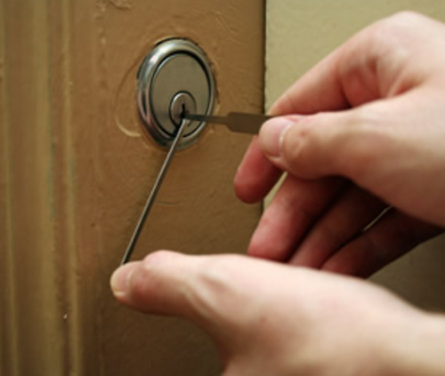

Lockpicking 101
By Arsène Lupin
I'm Arsène Lupin, and this is what you'll need to break into any place, at any time, in any condition, anywhere.
Place a metal mixing bowl and metal whisk into the freezer for 10 to 15 minutes.
Place the sugar into the mixing bowl and add the whipping cream. Whisk just until the cream reaches stiff peaks. Store any unused portion in an airtight container for up to 10 hours. When ready to use, rewhisk for 10 to 15 seconds.
Recipe found on Arsène Lupin's personal website.